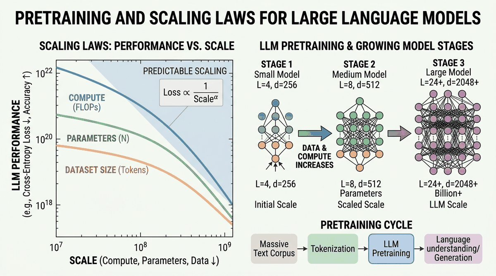

"The biggest lesson that can be read from 70 years of AI research is that general methods that leverage computation are ultimately the most effective, and by a large margin."
Scale, Computationally Devout AI Agent

Part I built up to a working Transformer. That Transformer needs to be trained on something, and the something is "most of the internet, plus everything we could license or scrape." This chapter zooms out from the architecture to the training recipe: what data goes in (and how it is cleaned), what objective the model optimizes, and the scaling laws that predict performance before you spend a million dollars on compute. Chinchilla, Kaplan, and the Chinchilla-vs-Kaplan reconciliation all live here.
Chapter Overview
This chapter takes you behind the curtain of modern language model development. While the Transformer architecture (Chapter 04) provides the blueprint, the real story of LLMs is one of scale: billions of parameters trained on trillions of tokens, consuming thousands of GPU hours. Understanding how this process works is essential for anyone building with or reasoning about these systems.
We begin by surveying the landmark models that shaped the field, from BERT to GPT-4 (see also the Modern LLM Landscape in Chapter 07). We then dissect the pre-training objectives that teach models to understand and generate language. Next, we explore the scaling laws that govern how model performance improves with more compute, data, and parameters, and the data curation pipelines that supply the raw material. We cover the optimization algorithms and distributed training infrastructure that make billion-parameter training feasible (with further inference-time optimization covered in Chapter 09). Finally, we examine the fascinating theoretical question of how in-context learning actually works inside transformers.
Pretraining is where the foundation model actually gets built. This chapter walks through the data, objectives, scaling laws, and distributed-training systems that make a frontier model possible. Most readers will never pretrain from scratch, but understanding what happens during pretraining is the prerequisite for every downstream decision: which fine-tuning method to choose, why certain failure modes exist, how to plan compute budgets.
Learning Objectives
- Trace the evolution from BERT to GPT-4, identifying the key architectural and training decisions that defined each era (continued in Chapter 07)
- Compare and implement pre-training objectives: causal LM, masked LM, span corruption, fill-in-the-middle, and multi-token prediction
- Apply Kaplan and Chinchilla scaling laws to estimate optimal model size and data requirements for a given compute budget
- Design a data curation pipeline with deduplication, quality filtering, and domain mixing
- Explain how Adam, AdamW, and Adafactor work, and select appropriate learning rate schedules for large-scale training
- Distinguish between DDP, FSDP, ZeRO, tensor parallelism, and pipeline parallelism, and select the right strategy for a given hardware setup (see also Chapter 18: Fine-Tuning for applying these in practice)
- Discuss leading theories of in-context learning: meta-learning, implicit gradient descent, and task vectors
Prerequisites
- Solid understanding of the Transformer architecture (Chapter 04)
- Familiarity with attention mechanisms and positional encodings (Chapter 03)
- Basic PyTorch proficiency: training loops, autograd, nn.Module (Chapter 00)
- Understanding of tokenization and subword models (Chapter 02)
- Comfort with basic probability and information theory (cross-entropy, perplexity)
Sections
- 6.1 The Landmark Models 🟢 🔬 BERT and its variants, GPT series evolution, T5 and text-to-text, emergence of in-context learning and chain-of-thought reasoning. Builds on the Transformer foundations from Chapter 04.
- 6.2 Pre-training Objectives & Paradigms 🟡 🔬 Causal language modeling, masked language modeling, span corruption, prefix LM, fill-in-the-middle, multi-token prediction. Connects to alignment objectives in Chapter 20.
- 6.3 Scaling Laws & Compute-Optimal Training 🔴 ⚙️ 🔧 Kaplan scaling laws, Chinchilla optimal ratios, data-constrained scaling, over-training for inference, emergent abilities debate.
- 6.4 Data Curation at Scale 🔴 ⚙️ 🔧 Common Crawl and web data sources, deduplication techniques, quality filtering, data mixing strategies, data pruning and influence functions.
- 6.5 Optimizers & Training Dynamics 🔴 🔬 Adam, AdamW, Adafactor, learning rate schedules, gradient accumulation, training instabilities, grokking, loss landscape geometry.
- 6.6 Distributed Training at Scale 🔴 ⚙️ 🔧 Communication primitives, DDP, FSDP, ZeRO stages, tensor and pipeline parallelism, mixed precision (FP16, BF16, FP8), gradient checkpointing. Applied further in Chapter 20: Distillation & Merging.
- 6.7 In-Context Learning Theory 🔴 🔬 The mystery of learning without gradients: meta-learning, implicit gradient descent, task vectors, mesa-optimization, and when ICL fails.
- 6.8 Production LLM Training Systems 🔴 ⚙️ Megatron-LM multi-axis parallelism (TP+PP+DP+CP), MoE load balancing, torch.compile and kernel optimization, FP8 training, TorchElastic fault tolerance, PyTorch DCP distributed checkpointing, streaming dataset pipelines.
What's Next?
In the next section, Section 7.1: The Landmark Models, we trace the landmark models that defined each era of language model development, from BERT and GPT to today's frontier systems.